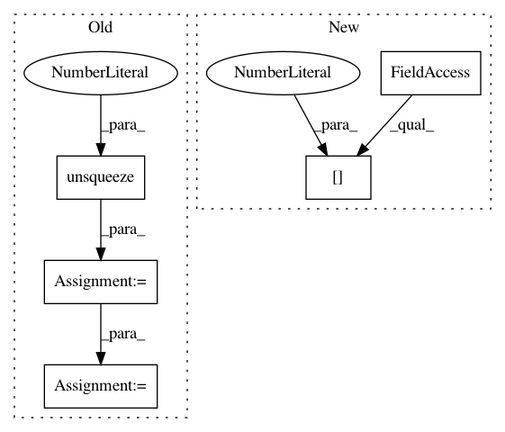

0c0f2d8895ad5b268d4c2c721980048286b12b34,paysage/models/tap_machine.py,TAP_rbm,gradient,#TAP_rbm#Any#Any#,339
Before Change
db_EMF /= (num_p + num_r)
// compute average grad_F_marginal over the minibatch
intermediate = be.expit(be.add(be.unsqueeze(b,0), be.dot(data_state.units[0], w)))
da = be.mean(data_state.units[0], axis=0)
db = be.mean(intermediate, axis=0)
batch_size = be.shape(data_state.units[0])[0]
dw = be.dot(be.transpose(data_state.units[0]), intermediate) / batch_size
grad = gu.Gradient(
After Change
[None for w in self.weights]
)
grad.weights[0] = layers.ParamsWeights(dw_EMF - grad_MFE.weights[0][0])
grad.layers[0] = layers.ParamsBernoulli(da_EMF - grad_MFE.layers[0][0])
grad.layers[1] = layers.ParamsBernoulli(db_EMF - grad_MFE.layers[1][0])
In pattern: SUPERPATTERN
Frequency: 4
Non-data size: 5
Instances
Project Name: drckf/paysage
Commit Name: 0c0f2d8895ad5b268d4c2c721980048286b12b34
Time: 2017-05-01
Author: geminatea@gmail.com
File Name: paysage/models/tap_machine.py
Class Name: TAP_rbm
Method Name: gradient
Project Name: arraiy/torchgeometry
Commit Name: e0e673fa73d2e71ec1c71d60deb6ff9151f387fd
Time: 2019-01-21
Author: edgar.riba@gmail.com
File Name: torchgeometry/conversions.py
Class Name:
Method Name: quaternion_to_angle_axis
Project Name: maciejkula/spotlight
Commit Name: bed4f2dd50ff54eb7629362c3d03a3b758e0745a
Time: 2017-08-09
Author: maciej.kula@gmail.com
File Name: spotlight/layers.py
Class Name: BloomEmbedding
Method Name: forward
Project Name: geomstats/geomstats
Commit Name: d5398270501cd5d6e9880db5e15ebf407ddec5ee
Time: 2020-04-03
Author: hadizaatiti@gmail.com
File Name: examples/plot_expectation_maximisation_manifolds.py
Class Name:
Method Name: weighted_gmm_pdf